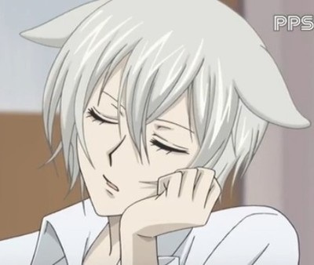
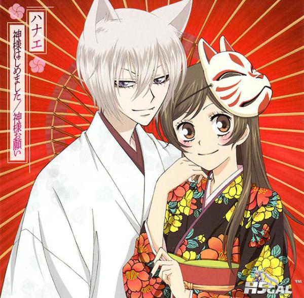

巴卫巴卫 （ともえtomoe），漫画《元气少女缘结神》及同名改编动画《元气少女缘结神》和《元气少女缘结神》 中的男主角，同时也是御影神社的第一神使。原为战斗能力极强的妖狐，后因为爱上人类女子，与堕落之神 黑磨缔结契约而想要变成人类，因未能完成契约受到死亡诅咒，为土地神御影所救，并在他的安排下与桃园 奈奈生相遇相恋，成为桃园奈奈生的神使。个性傲娇、腹黑、毒舌，也有温柔和人妻的一面，最终巴卫变成 了人类和奈奈生结了婚。
| 姓名 | 巴卫 | 《元气少女缘结神》 作者：铃木JULIETTA |
 |
| 身高 | 182cm | ||
| 职位 | 神使 | ||
| 擅长 | 料理，家务，变身术，只要愿意做的话几乎无所不能 | ||
| 习惯 | 手执一把小扇子，慵懒的坐姿，手扶着头侧躺在地板上 | ||
| 性格 | 温柔，善良，体贴，闷骚，腹黑，沉着冷静（对于奈奈生， 对于其他人则是心狠手辣，冷酷）傲娇（喜欢奈奈生却死不承认) |